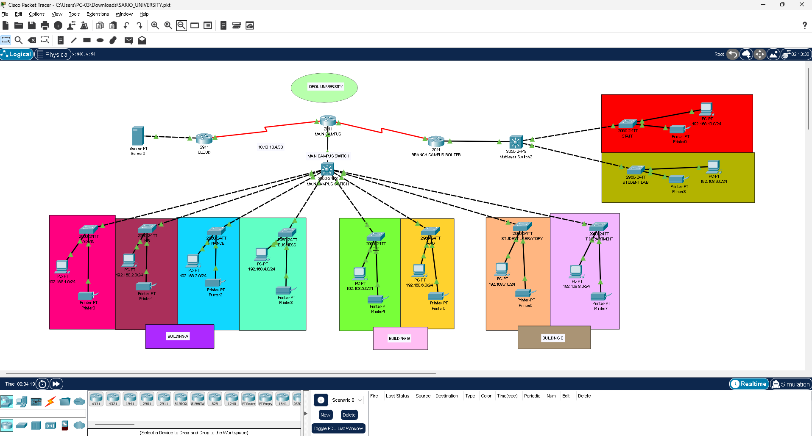
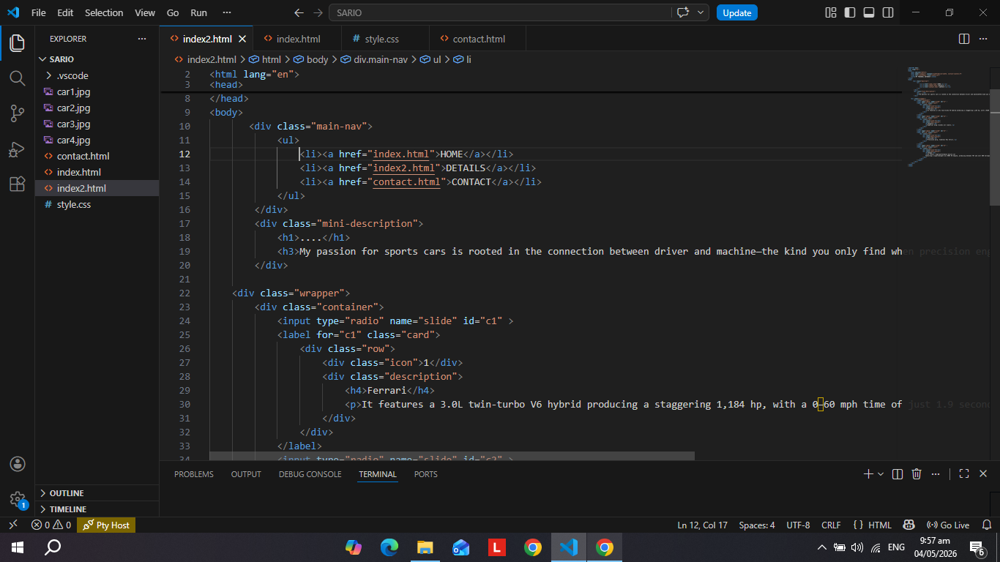
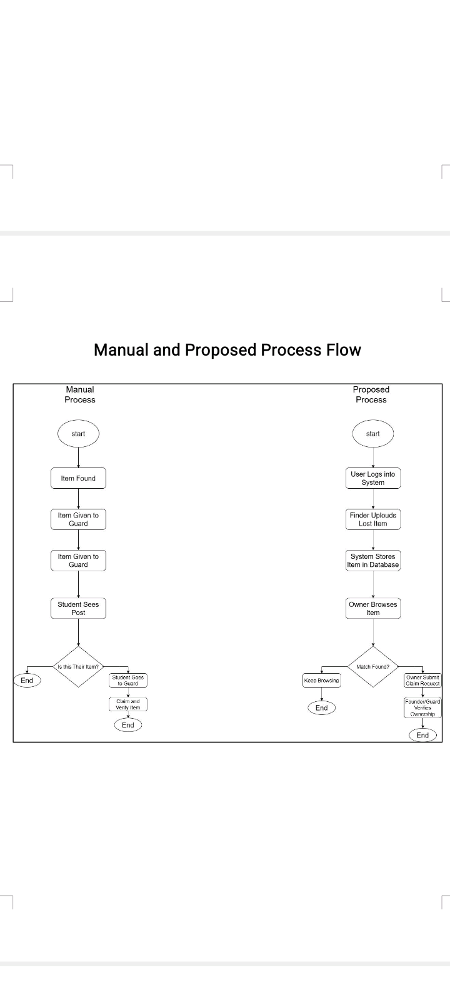

Hierarcical network design demonstrates the design and implementation of network infrastructure using Packet Tracer. It features a multi-building architecture that utilizes routers and multi-layer switches across diverse departments.

This web development project showcases responsive layouts, interactive animations, and modern UI design using HTML, CSS, and JavaScript.

This information system project manages and organizes data efficiently with a user-friendly interface and database integration.